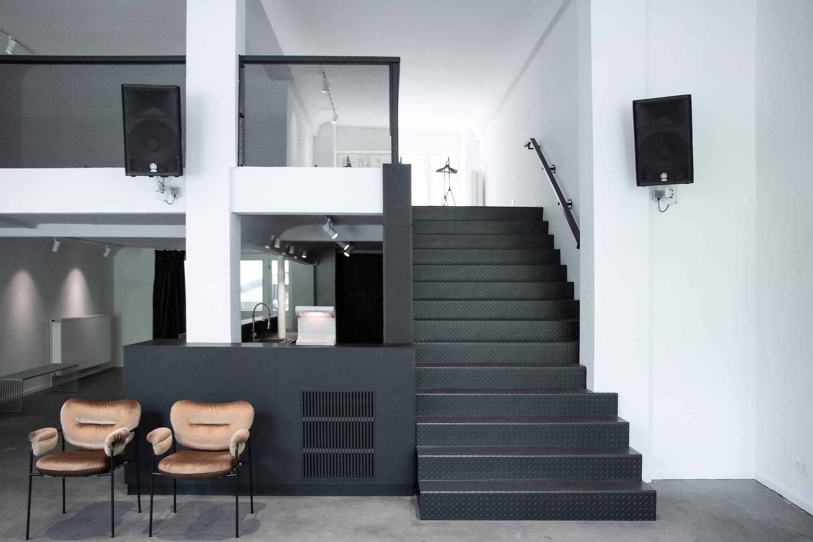

I'm not a real estate agent. I help creative teams find spaces with potential — places that don’t always stand out at first glance, but have something underneath. I translate spaces — reading their raw edges, their light, their energy — and see what they could become.
I scout the kind of spots you won’t find on the usual platforms: overlooked, character-filled, full of possibility. I work with agencies, start-ups, and design-led companies who know how much the right space matters — and don’t have time to go looking. I do the searching, you do the building.
Design-led companies, start-ups, and creative teams with vision — but no time to search.
© area studio belongs to @area — built with intention.